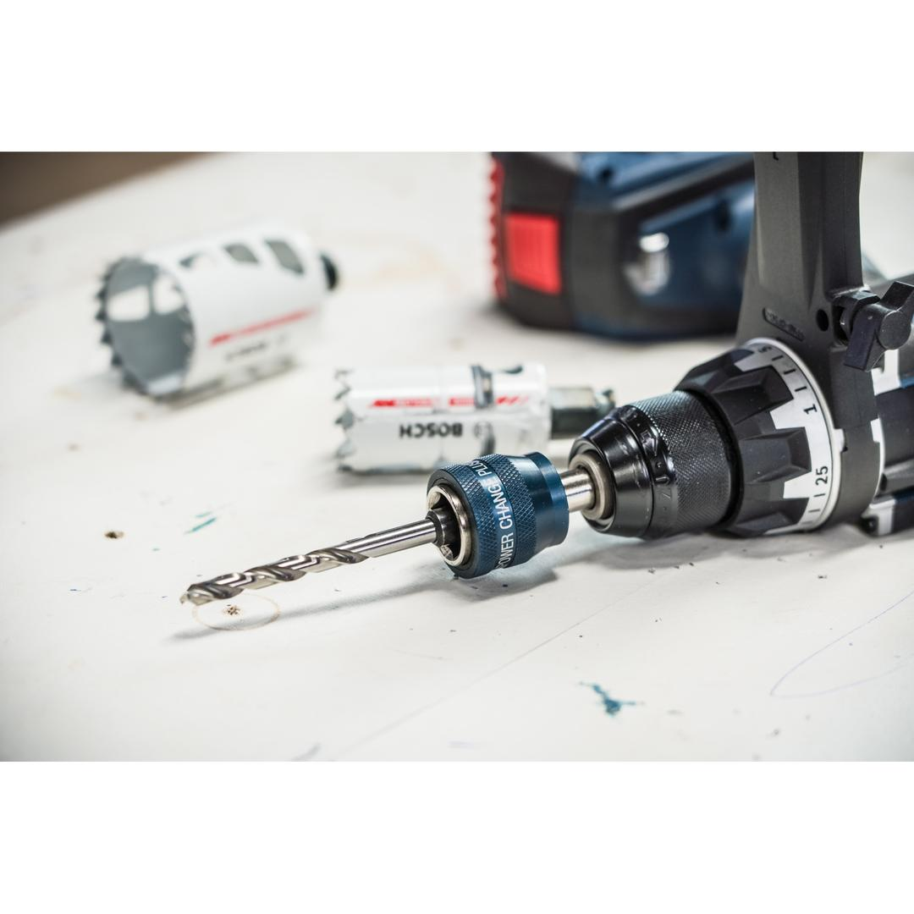
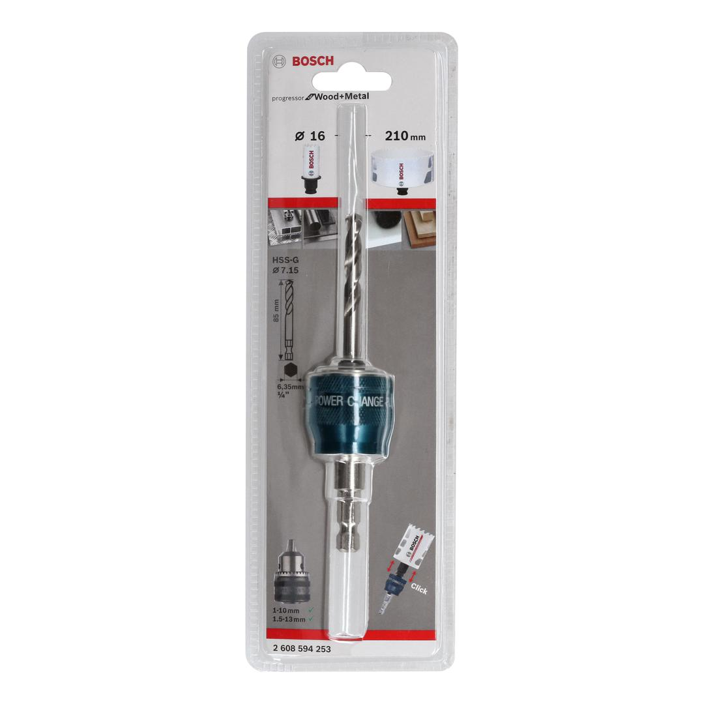
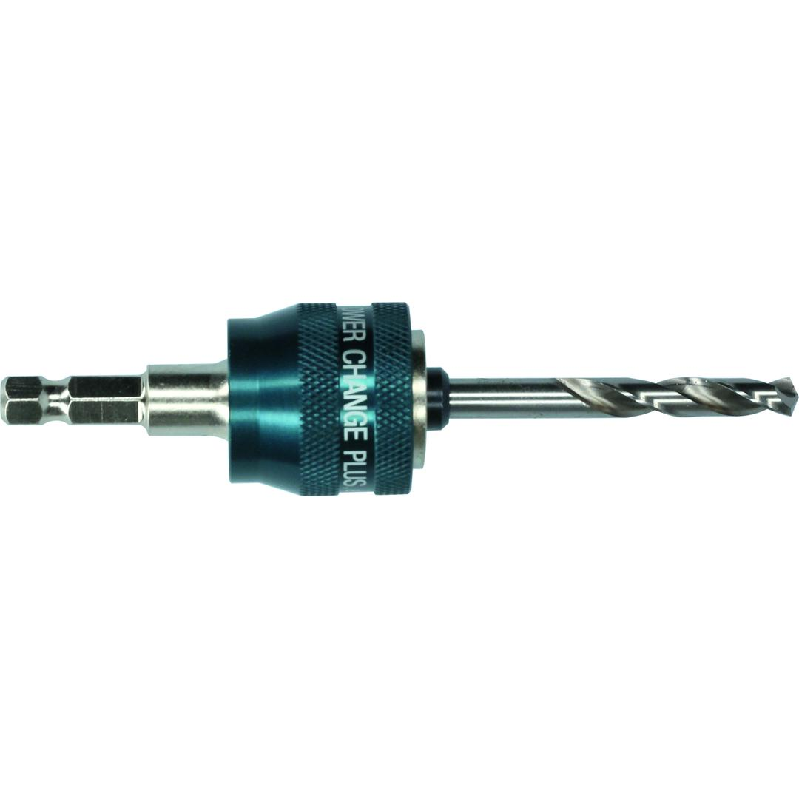

2608594253



| Diameter, mm |
7.15 |
| Working length, mm |
44 |
| Total length, mm |
85.00 |
| Shank shape |
Hexagon |
| Packaging type |
Combined cardboard / plastic packaging, blister, with Euro hole |
| Pack quantity |
1 Pcs |
| Minimum order quantity |
1 Pcs |